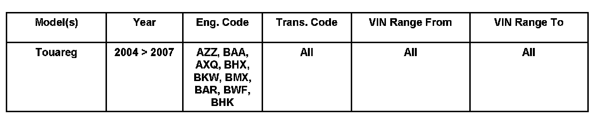
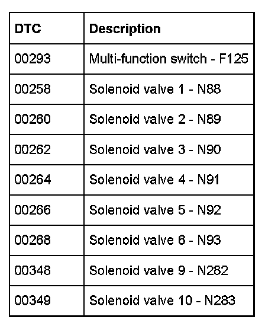
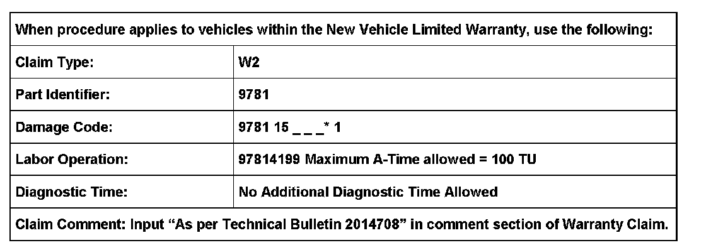
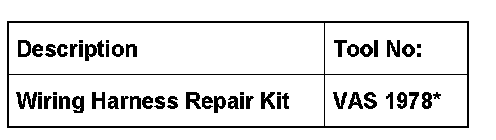

A/T - PRNDS Indicator ON/DTC's Set
38 07 01May 3, 2007
2014708

Affected Vehicles
Condition
Transmission, "PRNDS" Indicator Illuminated in Instrument Cluster
Technical Background
Automatic transmissions may switch to emergency mode when DTCs are present.

DTCs are displayed correctly on VAS 5051/5052 Scan Tool refer to the table.
Illumination of "PRNDS" Indicator may be caused by:
1. Multi-function switch implausible signal or solenoid valve (N88, N89, N90, N91, N92, N93, N282, N283) disruption to positive.
2. DTC 00293 caused by damaged wiring between TCM and T10s connector to multi-function switch.
3. Remaining DTCs may be caused by damaged wiring between TCM and T14e connectors.
Production Solution
Not applicable.
Service
1. Connect VAS 5051/5052 Scan Tool to view fault memory and run through Guided Fault Finding (GFF) test plan.
2. Read fault memory and run through (GFF) test plan.
3. Check affected solenoid resistance at connector plug T14e or T10s on transmission housing and at wiring harness connection to Transmission Control Module (TCM). Target values are in (GFF) test plan. (Refer to pin assignment in (GFF) test plan)
Tip:
Check pins according to DTCs that are stored in the Scan Tool.
4. If resistance on solenoid is within specification:
^ Using appropriate wire from VAS 1978 Repair kit, run an overlay wire from plug T14e or T10s to TCM.
5. Perform vehicle test drive.
If fault does NOT return:
^ Repair wiring harness with wiring harness repair kit VAS 1978.
If fault returns or resistance on transmission housing connector is not within specification:
^ Contact technical assistance by selecting "Technical Assistance" tab in ElsaWeb and follow instructions to obtain a 6 digit pin.
Warranty

*Code per warranty vendor code policy.

Required Parts and Tools
*Call Volkswagen Tools and Equipment Program (EQS), which is Equipment Solutions for product.
Additional Information
All part and service references provided in this Technical Bulletin are subject to change and/or removal. Always check with your Parts Dept. and Repair Manuals for the latest information.